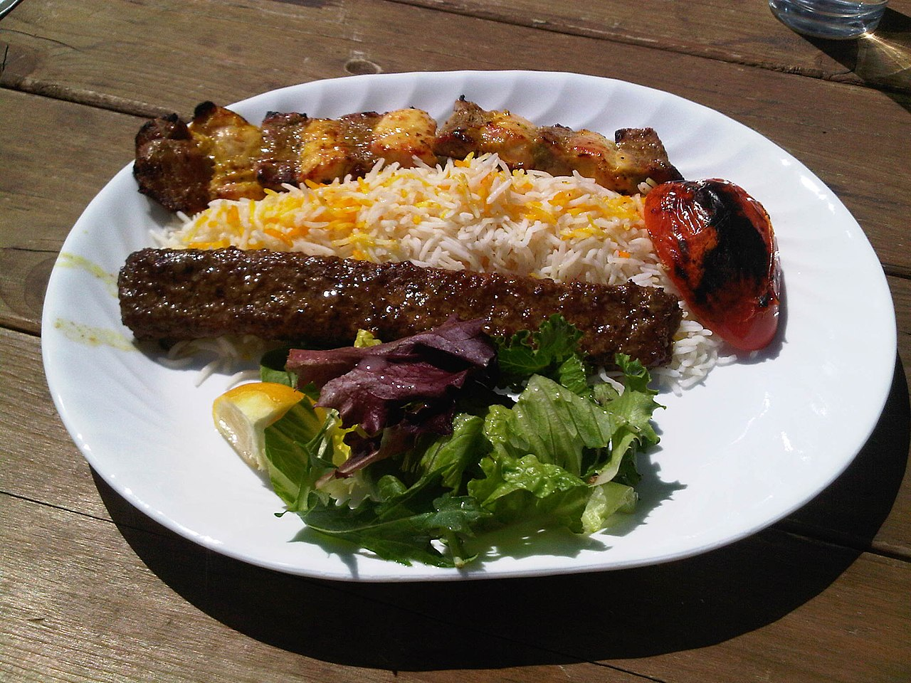

Chelo Kabab

Description
Chelo Kabab is a classic Persian dish consisting of grilled meat kababs served with steamed saffron rice (chelo).
Ingredients
- 1 lb ground beef or lamb
- 1 medium onion, grated
- 2 cloves garlic, minced
- 1 tsp salt
- 1/2 tsp black pepper
- 1/2 tsp turmeric
- 2 cups basmati rice
- Saffron (a pinch)
- Butter for serving
Steps
- Mix the ground meat with grated onion, garlic, salt, pepper, and turmeric
- Shape the meat mixture into long kababs around skewers
- Cook the basmati rice with saffron until fluffy
- Grill the kababs until well-cooked
- Serve the kababs over the rice with a pat of butter